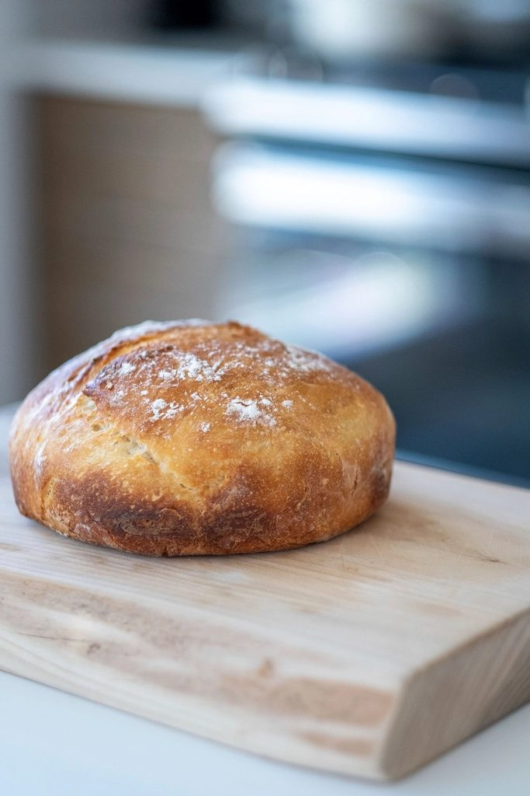
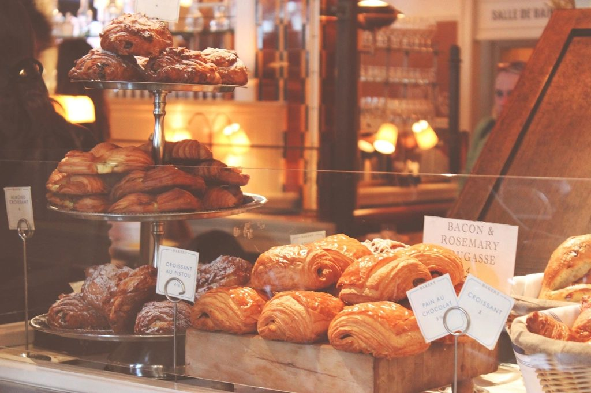

About
It started on a porch.
Honestly, it started as a pandemic thing. Dana was baking sourdough in her kitchen and selling it off the porch, and it kind of got out of hand.
First it was neighbors. Then it was neighbors of neighbors, then a waiting list, then a Saturday morning where the porch ran out before nine and somebody suggested — not entirely kindly — that we get a real shop.
So in 2021 Dana and her sister Jess signed a lease on Kentucky Street, bought one used oven, and found out how much they didn’t know. The second oven came a year later. So did the wholesale accounts, the wedding cakes, and the three people who now make it possible to close on Mondays.

The bread
The alarm goes off at four.
Sourdough doesn’t negotiate. The starter gets fed on its schedule, not ours, and the loaves you buy at seven were shaped the night before and baked while Petaluma was still dark. That’s the whole secret — there isn’t one. Just long fermentation and somebody willing to get up for it.
People say it’s the best sourdough in Sonoma County. We don’t know about that, but we’ll take it — and two cafés in town take enough of it that the country loaf gets its own rack in the second oven. The sandwich shop next door slices theirs before we’ve swept the floor.
“Best sourdough I’ve had outside of San Francisco. We drive up from Novato every Saturday.”

The rest of the case
Rolls by ten, cakes by Saturday.
The Saturday cinnamon rolls are gone by ten — that isn’t marketing, it’s a warning. The croissants and hand pies follow their own seasons, which is why fall smells like apples in here and nobody complains.
Cakes are the other half of the shop. Birthdays start at $75; wedding tiers are Dana’s quiet obsession and get quoted properly, over the phone, once she knows the date and the headcount. Tell us the theme and how many people. If Saturday is possible we’ll say so, and if it isn’t we’ll say that too.
And we remember people’s names. Five of us, two ovens, one small shop — it would honestly be harder not to.

Come say hi.
We’re on Kentucky Street in downtown Petaluma, Tuesday through Sunday. Closed Mondays — that’s when we sleep.
Tue–Sat 7–3 · Sun 8–1 · closed Mondays